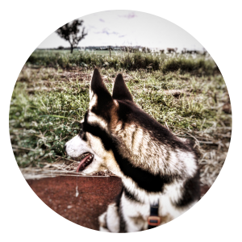

E aí, Sou o Atka
Ei, humano! Que legal que você me encontrou! Eu sou o Atka, o aventureiro de quatro patas que acabou se perdendo por aí. Este QR Code na minha coleira te trou-se até minha página, onde você pode ajudar a encontrar meu lar doce lar. Vamos nessa?
Olá, eu sou um Husky Siberiano, o peludo encantador que ama um carinho na barriga e puxar trenós... ou tentar, porque cá entre nós, puxar a coleira é mais a minha vibe! E olha, se eu parecer um pouco desgrenhado, é porque, sabe como é, troco todo meu pelo duas vezes por ano. Vai um desabafo: o aspirador tem sido o melhor amigo do meu humano!
Detalhes Relevantes:
- Nome:** Atka
- Raça:** Husky Siberiano
- Cor da Coleira:** Verde Camuflado
- Sinais Distintivos:** Tenho olhos castanhos, quatro unhas pretas e uma branca na patinha direita e uma personalidade que é só amor e brincadeira.
- Contato em Caso de Achado:** Se você quer me ver abanando o rabo em casa novamente, manda um salve pro meu humano, beleza? Aqui está o número de telefone, o nome dele é Marcelo: (11) 9 5186-3024, e a Dna da Pensão chama Fátima (16) 9 9122-3317
- Probleminhas:** Eu tenho um probleminha que nunca entendi direito, por isso fui adotado, é que as vezes eu tenho convulsões, se ocorrer apenas me contenha até eu melhorar. E uma outra questão, caso você esteja comendo algo doce eu vou fazer de pidão,mas não de ofereça, pois tenho tendencia a diabetes, até minha raçãozinha acabou sendo especial.
Trocar pelo duas vezes por ano pode ser uma bagunça. Mas olha, é só um pouco de pelo. Posso apostar que você já lidou com coisas piores!
Sou um mestre em escavação! Se você me vê com uma pá improvisada, é porque estou tentando descobrir um novo mundo no jardim. Desculpa, vizinho!
Adivinha só, eu adoro socializar... com qualquer um! Às vezes, vou te dar um susto com minha necessidade de cumprimentar todos os seres vivos que passam por nós!
Pedido Especial:
Me ajuda a voltar para casa? Vou ficar eternamente grato, e quem sabe, te convido para uma corridinha quando estivermos de volta! Obrigado por considerar minha volta ao lar.